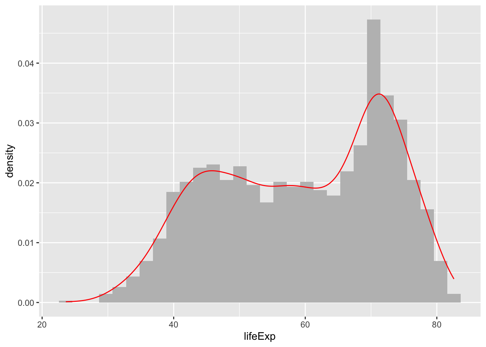
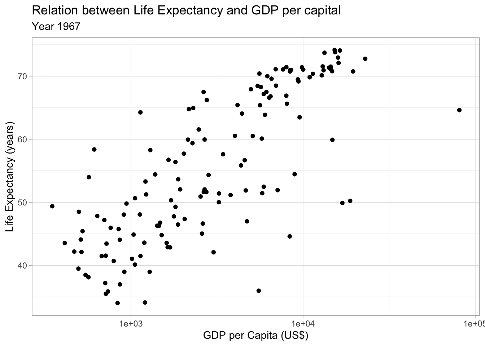

library(tidyverse)Plots with ggplot2
We are going to introduce the ggplot2 package, that will be our main tool for designing and create plots to visualize information. For starting using it remember that we need to load the tidyverse library as this package is part of the tidyverse environment.
If you are working with an older version of R maybe you need to load the library directly using library(ggplot2).
We are going to start creating our first plot. We have the following data set called gapminder, it contains information regarding countries: GDP, Life Expectancy and Population for several years.
Here a review of the dimensions and variables the data frame has:
glimpse(gapminder)Rows: 1,704
Columns: 6
$ country <fct> "Afghanistan", "Afghanistan", "Afghanistan", "Afghanistan", …
$ continent <fct> Asia, Asia, Asia, Asia, Asia, Asia, Asia, Asia, Asia, Asia, …
$ year <int> 1952, 1957, 1962, 1967, 1972, 1977, 1982, 1987, 1992, 1997, …
$ lifeExp <dbl> 28.801, 30.332, 31.997, 34.020, 36.088, 38.438, 39.854, 40.8…
$ pop <int> 8425333, 9240934, 10267083, 11537966, 13079460, 14880372, 12…
$ gdpPercap <dbl> 779.4453, 820.8530, 853.1007, 836.1971, 739.9811, 786.1134, …We wanted to see the behavior between lifeExp and gdpPercap on year 1967 to detect if we can see any relation between both variables. As they are both numeric continuous variables an scatter-plot (dot plot) will be enough.
Let’s prepare the data first filtering the information we want to visualize:
gapminder67 <- gapminder[gapminder$year == 1967, ]The Canvas
For creating a plot with ggplot2 we need to define the canvas, the plot object were we will draw the plot. For doing this we will use function ggplot().
ggplot(data = <data_to_use>, mapping = aes(x = <col1>, y = <col2>, ...))We need to provide the ggplot function the data to use:
ggplot(gapminder)
Geometries
We have the initial canvas, but we need to define the object to draw. In ggplot we can draw different kinds of plots and combine them, all these objects are called geometries…
In this case we want to create an scatter plot, so we will use geom_poin() object. We have different options more, for example:
- scatter plot:
geom_point() - line plot:
geom_line() - histograms:
geom_hist() - …
In this case we are adding a geom_point to the plot canvas, for doing that we need to use a + syntax and add it to the initial ggplot.
But there is something still missing… Which data we want to draw?!
Aesthetics
As we said we wanted to see the relation between lifeExp and gdpPercap, so our axis in the plot will be y as lifeExp and x as gdpPercap. How we introduce this information?
All geometries formulas have an argument called mapping were we need to introduce the aesthetics or aes(), this argument allow us to access the data inside the data frame. We will introduce the information as follows:
Now we got it! Aesthetics will help us incorporate more information to our plot, helping introducing more variables with different options.
Here are some of the ones we can use…
- shape
- color / fill (first one borders, second full figure)
- size
- alpha (transparency)
As you can see for creating plots with ggplot we introduce each element using +, it works as a layer system were we introduce different elements one by one until having the desired plot.
Understanding how to use mappings
For introducing the variables we need to use the mappings parameter and if the variable we need to use is from the data using the aes() function. In the example we are introducing the aesthetics into the geometries, but we can introduce them in the same ggplot, the difference depends on how it will interact with the layers of the plot.
We want to see how the possible values of lifeExp are distributed, we can see this with an histogram and a density plot. These geometries are geom_histogram and geom_density
ggplot(data = gapminder) +
geom_histogram(mapping = aes(x = lifeExp, y = after_stat(density)), fill = "grey") +
geom_density(mapping = aes(x = lifeExp), color="red")`stat_bin()` using `bins = 30`. Pick better value `binwidth`.
We have defined the axis in both elements added to the plot. But as both geometries share the same x axis we can define the aesthetics on the ggplot instead.
ggplot(data = gapminder, mapping = aes(x = lifeExp)) +
geom_histogram(mapping = aes(y = after_stat(density)), fill = "grey") +
geom_density(color="red")`stat_bin()` using `bins = 30`. Pick better value `binwidth`.
When we define an aesthetics on the ggplot() object it will be shared with all the geometries we add to the figure.
Adapting the plot and Customizing
Returning to our original plot about lifeExp and gdpPercap we are going to improve a bit eh overall plot appearance and display.
The dots are located very near each other showing a more dense visualization and not allowing a clear view of the data.
For solving that we can include a change in the scale in x using the log base, this technique is used frequently for improving how the data is displayed. In ggplot2 we can do it adding a new feature function called scale_x_log10()
ggplot(data = gapminder67) +
geom_point(mapping = aes(y = lifeExp, x = gdpPercap)) +
scale_x_log10()
As you can see we include all these new features using the + syntax, as this needs to be included in the same canvas we are using for creating the plot.
With the change of scale, now can see more clearly the relation between both variables.
Both variables show a positive relation, a higher GDP per capital is related with a higher Life Expectancy
Titles and Labels
Finally, we can include some customizing of the titles and labels. In ggplot this can be done using labs() function.
ggplot(data = gapminder67) +
geom_point(mapping = aes(y = lifeExp, x = gdpPercap)) +
scale_x_log10() +
labs(
title = "Relation between Life Expectancy and GDP per capital",
subtitle = "Year 1967",
y = "Life Expectancy (years)",
x = "GDP per Capita (US$)"
) +
theme_light()
This way we can improve and generate a final visualization to include in our reports and analysis. In the last code we have also included a theme, ggplot has predefined themes than change the plot overall appearance, as you can see all these new features on the plot are included using +.